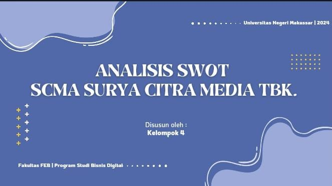

youri
Portofolio ini adalah bukti dari kreativitas tanpa batas. Dari konsep hingga eksekusi, setiap detail dibuat dengan penuh dedikasi
PROJEK

Pocket View adalah proyek branding untuk platform digital yang berfokus pada konten video kreatif dan hiburan anak muda.

Business Model Canvas ini membahas strategi bisnis untuk produk makanan ringan, memetakan elemen penting seperti nilai, pelanggan, dan sumber daya.

Analisis SWOT ini mengevaluasi kekuatan, kelemahan, peluang, dan ancaman yang dihadapi perusahaan media SCMA secara strategis.

Proyek ini membahas strategi pengembangan produk Basreng Gemush melalui analisis SWOT dan pendekatan manajemen strategis.